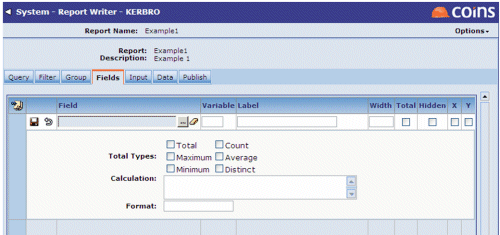

[Save] button.
[Save] button.When you choose the fields to show on your report,
Use the Fields tab to modify the report fields.

Variable - If the field is required to be used in a calculation, a variable can be assigned.
Label - The Name which will appear on the top of each column on the report.
Width -
Total - If you require the field to be totalled at the end of each column,
Available Options are the Maximum, Minimum, Average, Distinct Values or you can count the number of records by using the Count Option - By default all totals will Add.
Hidden - You can now hide a field, so if you require the information from a field (for example, to be used in a calculation) but you do not necessarily want this field to appear on the report,
X & Y - These two fields are the axes for the graph.
Calculations - You can now put complex or simple calculations into fields. Example of a simple calculation would be after assigning two fields to variables a and b - a third field can be added displaying the sum of these two fields by entering a + b into the calculation field.
For further information on Calculations, please refer to documentation on using Calculations.
Format - The format of a field will take on the default format as seen in the Database
| ->>>,>>>,>>9 | to display monetary values without pence |
| (>>>,>>>,>>9.99) | to display negatives with parentheses |
| ->>9.99% | to display values as percentages |
After all the fields within the field tab are defined, click the [Save] button.